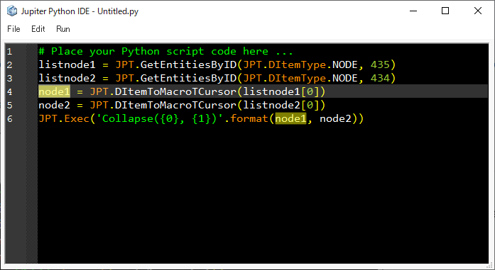
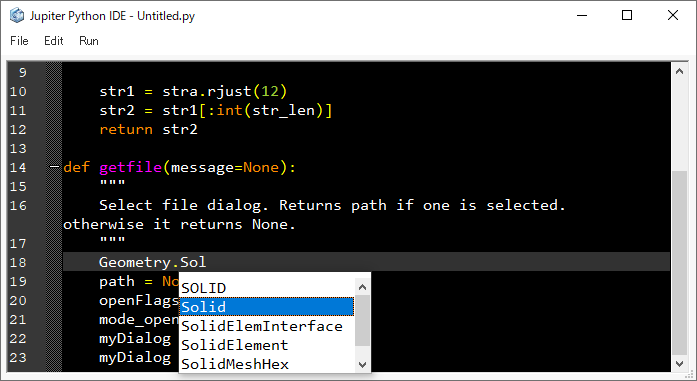
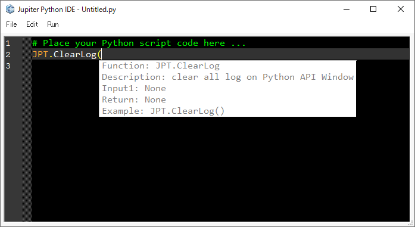
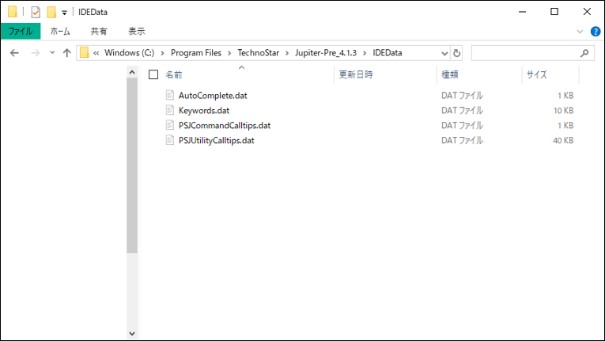

IDE¶
This section will introduce Jupiter’s customized IDE for PSJ.
Character input¶
Highlight¶

When user double-clicks a word, the same word is highlighted (yellow).
The highlighted data is stored in the database folder.
Auto completion¶

Supports auto-completion. For example, if user types “Geometry.Sol””, a list box will appear and show words that start with “Sol”.
The auto-completion data is stored in the database folder.
This function supports the following:
All words in the IDE
Python keywords
PSJ-Utility
Tooltip¶

Supports tooltips. For example, if user enters “JPT.ClearLog(“, a tooltip showing the JPT.ClearLog document is displayed.
Tooltip data is stored in the database folder.
Database¶

The IDE database is stored in the Jupiter installation folder (…/IDEData/).
This database can be edited freely.
Content of each file
Keywords.dat: Keywords highlighted in the IDE
PSJUtilityCalltips.dat: PSJ-Utility predictive conversion and call tips